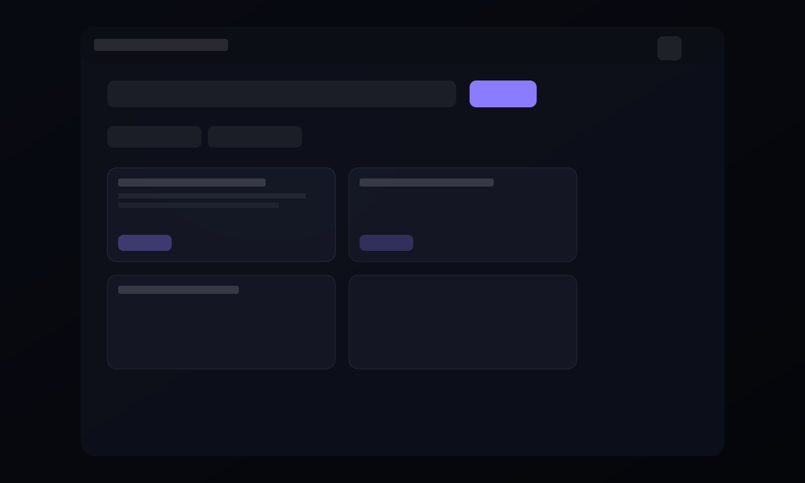
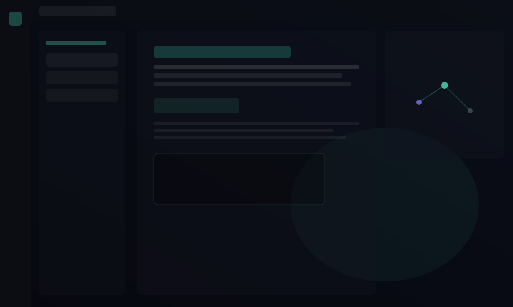

Dual runtime
Use Ollama for fast registry pulls or llama.cpp with your own
.gguf files—selected from the same top bar.
Local-first · Private · Extensible
A focused desktop shell for chatting with local models, browsing a compiled wiki from your documents, and installing weights from the Hugging Face hub or Ollama—without sending prompts to the cloud. The UI uses a cohesive dark “glass” theme with selectable accent presets, pinned metrics and download progress, and optional LoRA training hooks when you want to experiment.


Capabilities
Everything runs on your hardware. Swap backends, attach knowledge, pin the stats you care about, and keep cloud use limited to what you explicitly start (e.g. Hub downloads).
Use Ollama for fast registry pulls or llama.cpp with your own
.gguf files—selected from the same top bar.
Search curated and community models, then install with one action: prefer GGUF when available, or Safetensors with automatic pulls of config, tokenizer files, and multi-part shards into a per-model folder layout so local conversion and llama.cpp can succeed. Progress in the drawer and pinned downloads; resume uses stable resolve URLs.
Ingest sources, compile markdown wiki pages, search chunks, and surface glossary-style wiki highlights inside assistant messages—hover for context and jump straight to the article.
Optional local LoRA training for experimentation stays separate from inference. Pin metrics (memory, CPU, GPU, tokens, latency mini-charts) and activity bars alongside downloads. The interface uses a unified cosmic palette with accent presets (violet, teal, amber, rose, sky) in Settings → Appearance.
Requirements
Prebuilt installers target desktop OSes below. You bring an inference backend; model size drives RAM and disk more than the shell itself.
Windows 10 or 11 (x64), macOS Intel or Apple silicon, or Linux x64, matching the artifact you download.
Install Ollama or llama.cpp
llama-server separately. The app switches between them from the top bar.
Plan gigabytes per model on disk. Start around 8 GB system RAM for smaller models; 16 GB+ is more comfortable. GPU is optional; metrics can show NVIDIA memory when available.
Hugging Face token for gated models and rate limits. Python only if you use the optional local training workflow.
FAQ
Licensing, privacy, and how the app talks to the outside world.
Noncommercial use is covered by the PolyForm Noncommercial License 1.0.0 (personal use, qualifying nonprofits, schools, government, and similar—see the license text). Deploying inside a company, redistributing as part of a paid product, or other commercial use needs a separate agreement. When in doubt, ask before you ship.
Chat history, knowledge, wiki, and metrics samples live in a local SQLite database under your user profile. Model files sit in the folder you configure. Core chat inference stays on your machine; Hugging Face is contacted only for searches and downloads you start.
No—pick one backend. Use Ollama for quick pulls from its registry, or
llama.cpp with your own .gguf paths. Safetensors installs may use a
one-time conversion step; see documentation.
Licensing
The software is offered under the PolyForm Noncommercial License 1.0.0 together with additional copyright notices in the license file: noncommercial use is free; commercial use needs a separate agreement and fees. Read the full text on the license page before redistributing or deploying in a business.